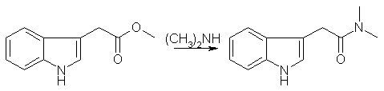
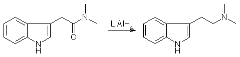
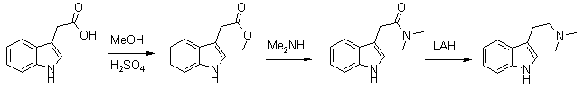

DMT from indoleacetic acid (IAA)[ Back to the Chemistry Archive ] IntroductionEverybody who ever tried knows that synthesizing tryptamines is a real pain and needs lots of know-how and experience. Especially dmt itself is notorious for being very tough to obtain in pure form. The classical oxalylchloride route is only for tough guys, imho, and the final reduction step needs to be so drastic that the final product is extremely hard to purify. Blessed are those who have a neat sublimation apparatus at hand, all others are pretty much lost. That's why I looked into alternative methods, and re-found the old route by Fish (JACS in the 50's, sorry, I haven't my notes here) starting from indoleacetic acid (IAA). According to my still unconfirmed information IAA is used in agriculture/horticulture as a plant grow hormone, which would make it an affordable and obtainable precursor. [Note: The actual reagent is IAA methyl ester, not the free acid]In the first step the acid is converted to the amine, Fish uses glycol as a solvent for the direct transformation. In my own trials, this works also very well in the usual 40% aqueous solution of dimethylamine, using 0.5-1% conc. H2SO4 as a catalyst. The reaction takes place at room temperature, but is slow, allow 48h for completion. It is easily monitored by TLC, using ethylacetate with a hint of MeOH or something polar like this. After completion an acid base extraction is necessary the remove the catalyst, and the crude product is evaporated to give a reddish thick oil. This can be recrystallized from ethyl acetate, but though Fish states very good yields, I could never obtain more than 50% from this crystallization. The strange but true thing is, that the amide breaks down while crystallizing! This is evident by TLC, two spots appears, one above and one below the amide, none of them is the starting material (IAA). When too much junk is in the solution, no crystallization occurs anymore. This is strange, cause the raw- product of the substitution is quite pure. But not pure enough to reduce it directly in the next step, recrystallization is essential. Other strange things: IAA has been totally inert towards dipropylamine under otherwise identical conditions. The junky mother liquor can be chromatographed to obtain pure amide, again. Trying to crystallize this stuff again leads to the same 50% yield in solid material. The reduction of this amide is performed with LiAlH4, or better with NaAlH4. I know the sodium stuff is much less common, and available usually only in tech (90% pure) grade, but the workup is much easier, as it aggregates much better during workup. As with ALL hydride reductions, an overhead mechanical stirrer is very much preferred over a magnetic stirrer. It just works better. (And yes, it gently to dramatically increases the yield in nitrostyrene reductions, too). The organic solution can easily be decanted. Reduction is performed in THF during 4 or so hours see Fish again, though he used ether. Use no more than 1.5 ml water per g hydride to hydrolize the cooled solution. The decanted or filtered solution is remarkable colorless (but only if you listened earlier and used only crystalline amide in the reduction step.) It is important that the next steps are performed fast. Not in a hurry, not with haste, but fast. If you used THF add enough ether to get a good separation of phases, and do an acid base extraction, so that you end up with the base (trpytamine) in ether solution. During the extraction the solution will turn more and more reddish, and it's sad to watch this happen. When you find a method to avoid this please let me know. After evaporation the crude tryptamine is dissolved in boiling hexane. (I heard cyclo-hexane would be better, but I haven't tried) This is very difficult, and after a while you may add ethylacetate dropwise to get all in solution, but not too much. I don't remember the correct amounts, must be around 30ml hexane per gram of tryptamine. Keep it boiling! On cooling down, usually an oil will separate. This is ok, as this oil is deeply colored, leaving a much less colored solution. After a while decant from the oil, which either collects at the bottom or sticks to the walls in to a clean flask. This flask is cold, so a lot more oils out, reheat to reflux until all is in solution, and clean the first flask while the second cools down. Decant from oils again. Repeat as often as you feel it is needed. One can end up with a perfectly clear solution this way, and be careful with the ethylacetate. Not too much. If the solution is clean enough, seed it with a crystal and set it in the freezer. Without a seed the task is kind of hopeless, sorry. If you really don't have one, dissolve the oil you decanted from earlier and let it evaporate in a petri dish or so. This can yield a semisolid material which may be good enough for seeding, but doesn't match my demands on the final product. If the seed dissolves the solution you made is way to dilute, evaporate a bit and try again. With this method dmt crystalls that are only slightly yellowish can be obtained. The real clear stuff is only obtainable by sublimation. What I offer is no breakthrough, but obviously I spend some time in the purification process. Although I read about it a lot in the literature, in MY hands the material does not survive a column chromatography. In my experience it's really important to work quick and to know what you are doing, fooling around with tryptamines is not a good idea, they are unforgiving. Trying to purify a dirty product makes things only worse, and that's why it is important to start with a pretty pure product to begin with. The gentler conditions of reducing a simple amide instead of a glyoxylamide provides a much cleaner crude product. Perhaps most importantly, IAA is probably available to those that are willing to spend some effort, and the first step is as easy as it gets in organic chemistry. TLC is essential during the whole process to know how things are going. If you don't know exactly what I was describing in the procedure above, don't even think about trying to reproduce it. N,N-dimethylindole-acetamide [1] A mixture of 16.0 g of methyl-3-indoleacetate, 100 ml of ethylene glycol and 19.4 of anhydrous dimethylamine was stirred at RT for 40 hrs. The mixture was poured into 100 ml of water and extracted with 5 100ml-portions of ethylacetate:ether (1:1). The extract was washed with a little water, dried and evaporated to give a red oil. This was taken up in warm EtOAc and on chilling, three crops of colorless cryst weighting a total of 12.5 g (70%) were obtained, mp 126-128�C. N,N-Dimethyltryptamine [1] A suspension of finally-divided amide (2.1 g) in 100 ml of ether was added to a slurry of 0.8 g of LiAlH4 in 50 ml of ether, and the mixt refluxed for 4 hrs. The mixt. was treated in the usual way, and the final org. extract of amine gave after recryst. from hexane 1.6 g (85%) of material mp 47-49�C. Take a note, only recrystalized amide acceptable for reduction step; reaction with crude amide gives a complex not-active mixture. And IAA (twice recryst from hot water, white plates with mp 168�C) has a very slight smell, resembling strongly diluted phenylacetic acid. The amide has no smell at all. DMT from Indole-3-acetic acid [2] This is a more recent synthesis, which gives higher yields and uses commercial 40% aqueous dimethylamine for synthesizing the intermediate amide instead of the low-boiling freebase. The method can also be used for the synthesis of 5-MeO-DMT. The overall yield of dimethyltryptamines from the corresponding indoleacetic acids are around 57%. Indole-3-methylacetate (1) A solution of 1g (5.3 mmol) of indole-3-acetic acid in 70ml of methanol with a few drops of concentrated sulfuric acid was heated under reflux for two hours until complete disappearance of the acid, as checked by TLC on alumina plates using ethylacetate, Rf (acid) 0.1, Rf (ester) 0.9. The solution was neutralized with CaCO3, filtered and the solvent was evaporated under reduced pressure. The crude product was crystallised from methanol to give 0.95g (5.0 mmol, 95%), mp 48-48.5�C. N,N-Dimethyltryptamide (2) The ester 1 was dissolved in 20 ml of 40% aqueous solution of dimethylamine (DMA). It was stirred at 20�C for 40 hrs, the reaction was tested by TLC Silicagel/ethylacetate, Rf (amide) 0.5; Rf (ester) 0.8. The excess of DMA was evaporated at 20�C under reduced pressure to avoid hydrolysis. The product was filtered and purified by sublimation under diminished pressure to give 0.8 g (4 mmol, 80%), mp 119-120�C. N,N-Dimethyltryptamine (3) To a stirred suspension of LiAlH4 (0.4 g, 10.5 mmol) in dry THF (15 ml), the amide 2 (0.4 g, 1.98 mmol) dissolved in dry dichloromethane (25 ml) was added slowly. The mixture was stirred for 48 hrs at room temperature under nitrogen until complete disappearance of the amide was achieved as checked by TLC, silicagel/methanol, Rf (amine) 0.2, Rf (amide) 0.8. The mixture was cooled in an ice bath, and treated with several drops of water to decompose the excess of LiAlH4 reagent. The reaction mixture was vacuum filtered to remove any remaining solids, dried over anhydrous MgSO4, and solvents removed. The yield was 76% (0,28 g, 1.5 mmol) of a colorless oil which crystallised in the freezer (-20�C) in one week, mp 44-45�C (Oxalate, mp 151-151�C). 5-MeO-DMT from 5-Methoxy-Indole-3-acetic acid [2]5-Methoxyindole-3-methylacetate (4) 5-Methoxyindole-3-acetic acid (1.0 g, 4.9 mmol) was transformed to the ester 4 by the same procedure as that described for 1. The crude product was crystallised from methanol to give 0.98 g (4.5 mmol, 92%), mp 73-74�C. 5-Methoxy-N,N-dimethylacetamide (5) The amide 5 was prepared from 4 (0.95 g, 4.3 mmol) using the procedure described above for 2. The product was filtered and purified by sublimation under diminished pressure to yield 0.8 g (4 mmol, 82%), mp 78-80�C. 5-Methoxy-N,N-dimethyltryptamine (6) To a stirred suspension of LiAlH4 (0.7 g, 18.4 mmol) in dry THF (20 ml) was gradually added the amide 5 (0.7 g, 3.0 mmol) dissolved in dry dichloromethane (25 ml). The mixture was heated for 9 hrs under reflux with nitrogen until complete disappearance of the amide. TLC silicagel/methanol, Rf (amine) 0.1, Rf (amide) 0.8. The mixture was cooled in an ice bath, and treated with several drops of water to decompose the excess of LiAlH4 reagent. The reaction mixture was vacuum filtered to remove any remaining solids, dried over anhydrous MgSO4, and solvents removed by vacuum. The colorless oil was crystallised from ethanol, mp 50-51�C. The yield was 75% (0.49 g, 2.26 mmol). References [1] J. Am. Chem. Soc. 78, 3670 (1956)
|